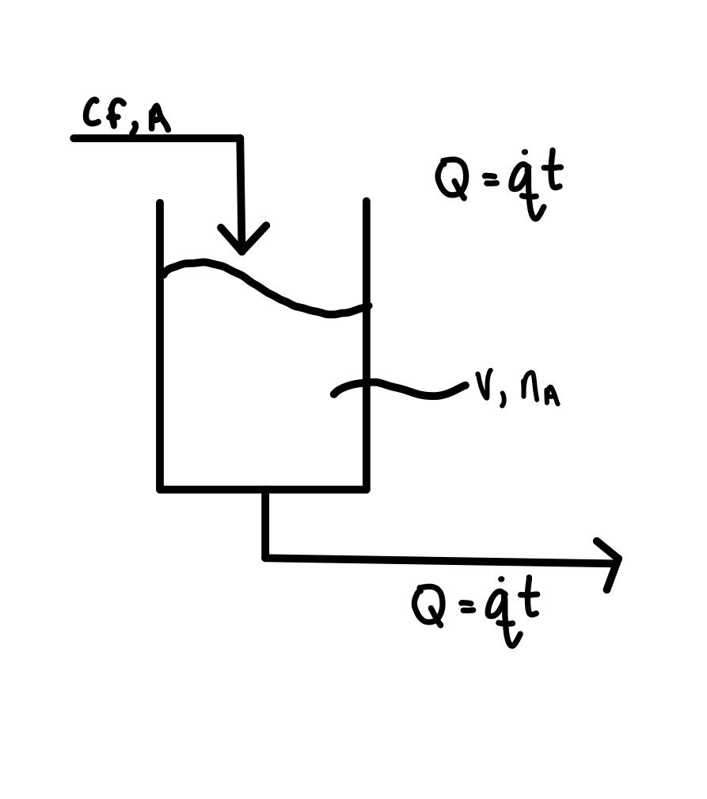

5.7. Integrating factor#
What do we do when an ODE is not exact? For example,
has
so it is not exact. However, we may be able to make it exact if we multiply by an integrating factor. For example, let’s try a factor \(F = 1/x^2\). Multiplying through by F:
so
Now the ODE is exact and can be solved using techniques we learned previously.
5.7.1. Finding the integrating factor#
Let’s use these formulas to arrive at the integrating factor we used above:
is a function of only x so
Note that this is not the only suitable integrating factor! Let’s try the S route for fun:
S is a function of only y so
is another suitable integrating factor.
5.7.2. Application to linear first-order ODEs#
Example: Mole balance on a tank with increasing inlet/outlet flow rate.
A stream with concentration \(c_{{\rm f},{\rm A}}\) of solute A flows into a tank with initial volume V at a continuously increasing volumetric flow rate \(Q = \dot q t\), where \(\dot q\) is the rate of increase in the flow rate and t is time. A well-mixed stream is withdrawn from the tank at the same rate.
{kind=link}
If there are initial \(n_{{\rm A},0}\) moles of the solute, derive an expression for the number of moles in the tank \(n_{\rm A}\) as a function of time.
Formulate overall mole balances based on entering and exit streams.
Replace the molar flowrates with the equivalent concentrations and volumetric flow rates
so the initial value problem is
Rewrite in standard form
This is a linear first-order ODE with
that can be solved using an integrating factor:
Then, evaluate the integral
using the u substitution:
Last, combine the results:
Use the inital conditions to evaluate the integration constant:
The final result is:
Example: Hormone level (again)
We had
This is a linear first-order ODE with:
that can be solved using an integrating factor:
Then, evaluate the integral using the table of integrals or integration by parts to evaluate the second integral in the equation
The general solution is:
Use the inital condition to evaluate the integration constant:
The final solution is:
5.7.3. Skill builder problems#
Solve the following differential equations:
\(\displaystyle y' = \frac{x^4 + y^2}{xy}\)
Solution
This ODE is not in the standard form, so we need to first rearrange:
(5.134)#\[\begin{align} xy \d{y} = (x^4+y^2) \d{x} \\ (x^4 + y^2) \d{x} - xy \d{y} = 0 \end{align}\]so:
(5.135)#\[\begin{align} P &= x^4 + y^2 \\ Q &= -xy \end{align}\]Check to see if the ODE is exact:
(5.136)#\[\begin{align} \td{}{P}{y}{x} &= 2y \\ \td{}{Q}{x}{y} &= -y \end{align}\]The two partial derivatives are not equal, so the ODE is not exact. In order to make it exact, we need to find an integrating factor F. First, compute:
(5.137)#\[\begin{align} R &= \frac{1}{Q}\left[\td{}{P}{y}{x} - \td{}{Q}{x}{y} \right] \\ &=\frac{1}{-xy}(2y-(-y)) \\ &= -\frac{3}{x} \end{align}\]R is a function of only x, so use it to compute F
(5.138)#\[\begin{equation} F = \exp\left(\int \frac{-3}{x} \d{x}\right) = e^{-3\ln(x)} = x^{-3} \end{equation}\]Apply the integrating factor to the original ODE:
(5.139)#\[\begin{align} x^{-3}(x^4+y^2) \d{x} - x^{-3}(xy) \d{y} &= 0 \\ \left(x+\frac{y^2}{x^{-3}}\right) \d{x} - \frac{y}{x^2} \d{y} &= 0 \end{align}\]Integrate the Q of our exact ODE with respect to y:
(5.140)#\[\begin{equation} f(x,y) = \int -\frac{y}{x^2} \d{y} = \frac{-y^2}{2x^2}+k(x) \end{equation}\]where k is an unknown function of x. Then, differentiate f with respect to x and compare to P of the exact ODE:
(5.141)#\[\begin{align} \td{}{f}{x}{y} = \frac{y^2}{x^3} + k'(x) &= P = x + \frac{y^2}{x^3} \\ k'(x) &= x \\ \end{align}\]This ODE for k can be integrated directly (neglecting the integration constant)
(5.142)#\[\begin{equation} k = \int x \d{x} = \frac{x^2}{2} \end{equation}\]Putting it all together,
(5.143)#\[\begin{align} f = \frac{-y^2}{2x^2} + \frac{x^2}{2} = c \end{align}\]is an implicit solution of the ODE.
\(\displaystyle y' = -\frac{e^{x+y} + ye^y}{x e^y - 1}\)
Solution
This ODE is not in the standard form, so we need to first rearrange:
(5.144)#\[\begin{align} (e^{x+y} + ye^y) \d{x} + (x e^y - 1) \d{y} = 0 \end{align}\]so
(5.145)#\[\begin{align} P &= e^{x+y} + ye^y \\ Q &= x e^y - 1 \end{align}\]Check if the differential equation is exact:
(5.146)#\[\begin{align} \td{}{P}{y}{x} &= e^{x+y} + y e^y + e^y \\ \td{}{Q}{x}{y} &= e^y \end{align}\]These are not equal, so the equation is not exact. To make it exact, find integrating factor F. The R formula gives:
(5.147)#\[\begin{align} R &= \frac{1}{Q}\left[\td{}{P}{y}{x} - \td{}{Q}{x}{y} \right] \\ &=\frac{1}{x e^y - 1}(e^{x+y} + y e^y + e^y - e^y) \\ &= \frac{e^y(e^x + y)}{x e^y - 1} \end{align}\]this is not a function of only x, so try the S formula:
(5.148)#\[\begin{align} S &= -\frac{Q}{P} R \\ &= -\frac{e^y(e^x + y)}{e^{x+y} + y e^y} \\ &= -1 \end{align}\]This is a function of, at most, y so:
(5.149)#\[\begin{equation} F = \exp\left(\int S\d{y} \right) = e^{-y} \end{equation}\]Multiply the equation by F:
(5.150)#\[\begin{equation} (e^x + y) \d{x} + (x - e^{-y}) \d{y} = 0 \end{equation}\]Now the equation is exact so integrate the new P with respect to x:
(5.151)#\[\begin{equation} f(x,y) = \int (e^x + y) \d{x} = e^x + xy + k(y) \end{equation}\]where k is an unknown function of y. Then, differentiate f with respect to y and compare to Q:
(5.152)#\[\begin{align} \td{}{f}{x}{y} = x + k'(y) &= Q = x - e^{-y} \\ k' &= -e^{-y} \end{align}\]This ODE for k can be integrated directly (neglecting the integration constant)
(5.153)#\[\begin{align} k(y) = \int -e^{-y} \d{y} = e^{-y} \end{align}\]Putting it all together,
(5.154)#\[\begin{align} f(x, y) = e^x + e^{-y} + xy = c \end{align}\]is an implicit solution for the ODE.
\(\displaystyle y' = y + 1 - 2x\)
Solution
Rewrite in linear form:
(5.155)#\[\begin{align} y' - y = 1 - 2x \end{align}\]where
(5.156)#\[\begin{align} p = -1 \qquad r = 1 - 2x \end{align}\]Find integrating factor:
(5.157)#\[\begin{align} F = e^{\int p\d{x}} = e^{\int -1 \d{x}} = e^{-x} \end{align}\]Then, evaluate the integral
(5.158)#\[\begin{equation} \int F r \d{x} = \int e^{-x} (1-2x) \d{x} \end{equation}\]This integral can be evaluated by parts using the tabular method:
sign
\(u\)
\(\d{v}\)
\(e^{-x}\)
\(+\)
\(1-2x\)
\(-e^{-x}\)
\(-\)
\(-2\)
\(e^{-x}\)
\(0\)
so
(5.159)#\[\begin{equation} \int F r \d{x} = (2x-1)e^{-x} + 2 e^{-x} = (2x + 1) e^{-x} \end{equation}\]Putting it all together:
(5.160)#\[\begin{align} y &= \frac{1}{F}\left(\int F r \d{x} + c \right) \\ &= e^x \left[ (2x + 1) e^{-x} + c \right] \\ &= 1 + 2x + c e^x \end{align}\]